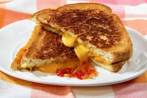

grilled-cheese

Description
It's your average grilled cheese but with brown sugar added.
ingredients
- 2 slices white bread
- 2 slices American cheese
- 2 teaspoons brown sugar
- 2 teaspoons softened butter
steps
- Heat a skillet over medium heat.
- Spread butter onto one side of a piece of bread and place butter side down in the skillet.
- Place one piece of cheese on top of the bread, then sprinkle with brown sugar.
- Top with the other slice of cheese. Butter the other slice of bread and place on top with the butter side up
- Fry on each side until golden brown, 3 to 5 minutes per side.